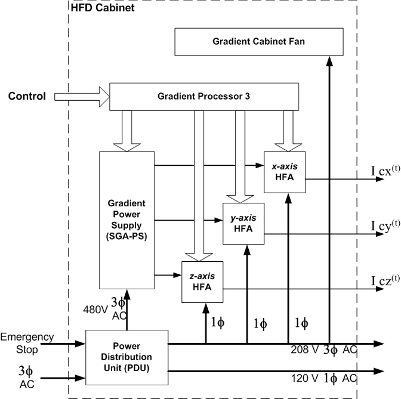

Proprietary to General Electric Company
Direction 5440000, Rev# 5
Signa HDxt Service Methods
Module Version 1.0, Version Date 4/25/07
Proprietary to General Electric Company |
The High Fidelity Driver (HFD) is a gradient amplifier subsystem for use in the Signa MR/i system. It contains a Gradient Processor (the GP3), three High Fidelity Gradient Amplifiers (HFA), a power supply for the HFA’s (the SGA-PS), and, and Power Distribution Unit for the system (the PDU). A block diagram for the HFD/PDU subsystem is shown in Illustration 1.
Illustration 1: HFD/PDU CABINET BLOCK DIAGRAM

For HFD-Dual Cabinet configurations, two GP3s can interact using a master/slave architecture, controlling two HFD cabinets synchronously. A single switch or jumper shall be present to configure the GP3 as either the master or slave. For single-cabinet configurations, the jumper shall be set to Master. Error codes were written to address this configuration in the field; hence the error codes read master and slave gradients. If the configuration is a single gradient cabinet, the error code will read master gradient error but it is the only gradient error.
The HFD/PDU is compatible with line voltages of 200, 208, 380, 415,
and 480 VAC, and line frequencies of 47 - 63Hz. Further information on the
PDU can be found in , Teal PDU Module .
.